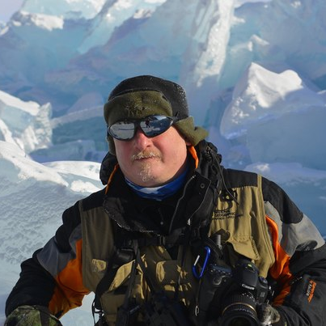
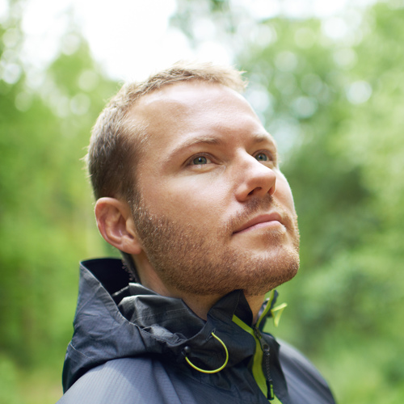

When to go vs. Where to go
Meet Alex
Alex hunts the right moments to take stunning nature photography.
One of his most gorgeous catches is Lake Baikal in February.
Timing is important for Alex.
Here's Jacob
Jacob has a busy work schedule and only two weeks to travel. He doesn't want to spend them at a hotel, he wants to get the most out of his time off.
So he picks Ecuador in January to experience the most breathtaking views of volcanoes.
Lisa is a travel blogger
Her specialty is world's most incredible events. This year she is going to Chiang Mai in November to catch the Festival of Lights.
Today, we have hundreds, if not thousands of sources of inspiration about where to go. It has been the primary question up till now. However, there is a whole layer of timing that often gets ignored. And it's this layer that has the greatest potential to amplify our travel experiences.
You've seen Atacama desert, but have you seen it blooming? Trust us, the latter is a much richer experience and it depends on the timing of your visit.
With What's it like we aim to bring the long deserved attention to the question of when to go.
We want your insights
As travelers and experience hunters we know things about places. We tell stories and our stories fascinate. It makes us happy when our adventures inspire others. Every single one of us possesses unique insights about what it's like in places we got to know - and collectively, we know what the majority of our planet is like.
Collectively, we know what it's like
There are many blanks to fill in. You know things about places. You have the power to inspire others to have the best time of their lives.
For Editors
We're looking for volunteer editors and community managers to join our founding team and help us gather and organize expert knowledge, to reach out to more experts and keep our community inspired.
Your role can involve wearing as many hats as you wish. You're good at marketing, web development, visual design, product strategy, fundraising, business development, copywriting, analytics, pitching, research, etc. - we want it all, be sure to let us know what are your best skills.
What we offer:
- get high on travel inspiration from fellow travel experts.
- be your own boss - we don't babysit.
- explore your talents and discover new skills - wearing multiple hats is encouraged.
- volunteering can grow into something more financially interesting.
- contribute as much as you feel comfortable - we do ask for commitment regardless of the amount of your input.
- put it on your resume as a side project - make yourself more interesting.
- connect with like-minded people, grow your travel and business network.
- work with other travel addicts just like you.